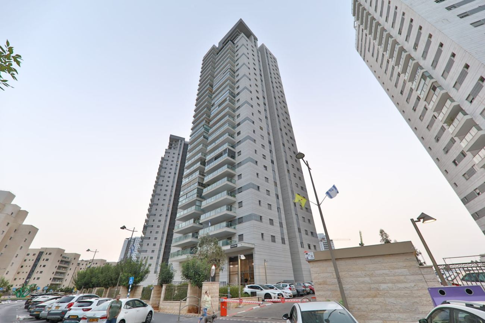
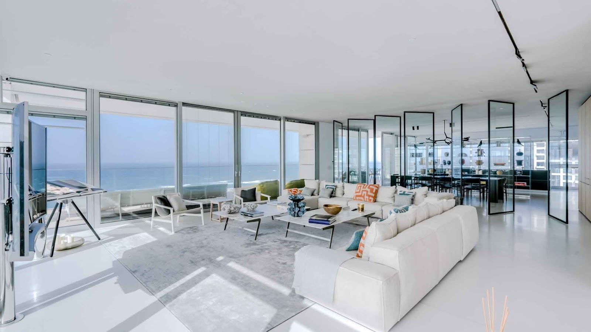
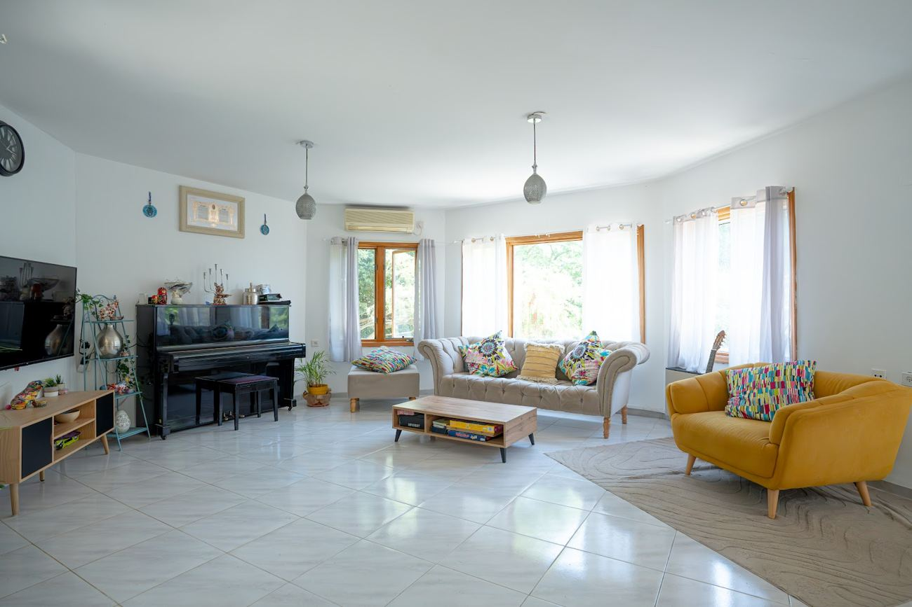
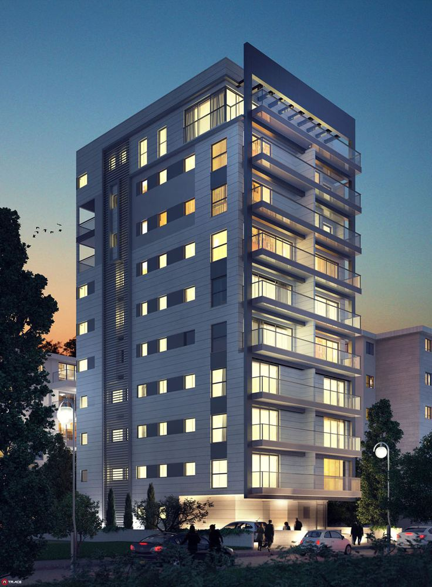
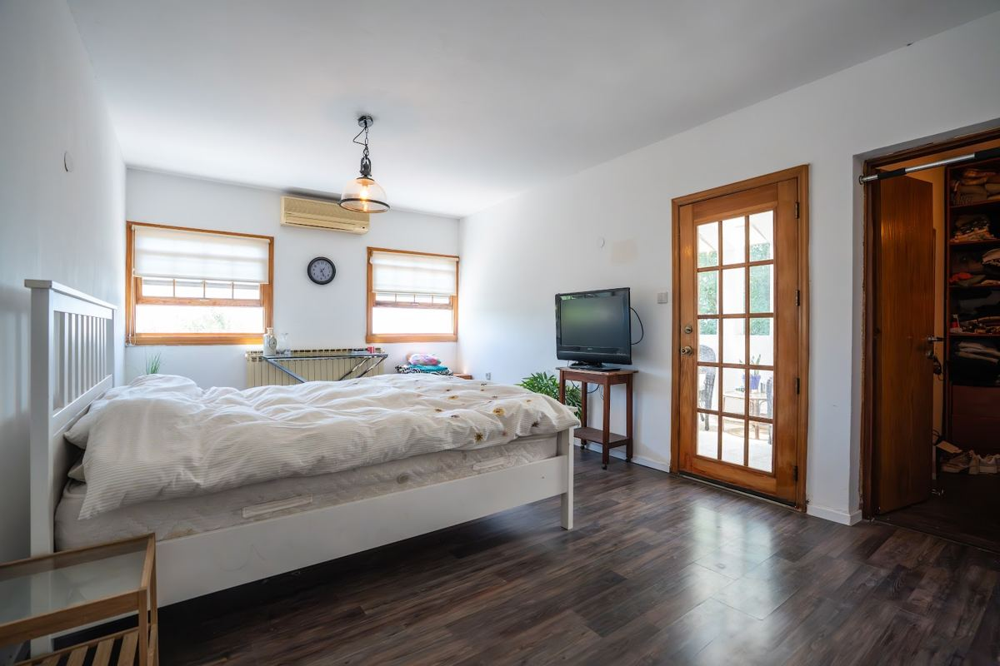
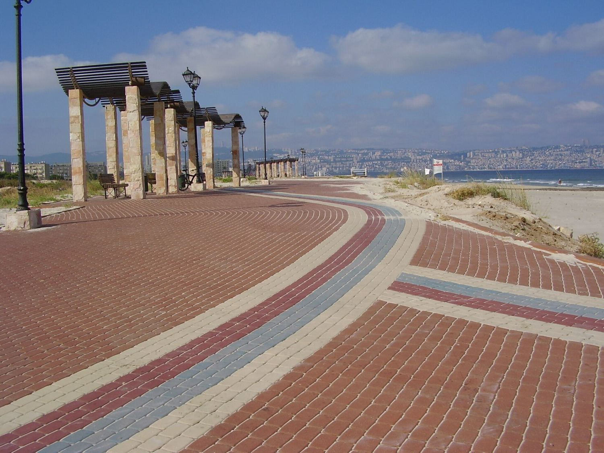

יהונתן טרבלסיYehonatan Trabelsi תיווך בקריות.Real estate, the Krayot.
מתווך נדל״ן בקריית ים. מלווה מוכרים וקונים של דירות בקריות.A real-estate agent in Kiryat Yam, working with people selling and buying homes in the Krayot.

מתווך מקריית ים, לדירות בקריות.From Kiryat Yam, for homes in the Krayot.
“מקצועי, אמין ונותן הכל בשביל הנכס.”
“Professional, reliable, and gives everything for the property.”
בתים, מבפנים.Homes, from the inside.
תמונות מתוך הפרופיל של יהונתן בגוגל. גררו כדי להסתובב בחדר.Photos from Yehonatan’s Google profile. Drag to turn around the room.





ספרו ליהונתן מה אתם מחפשים.Tell Yehonatan what you’re after.
שלוש בחירות, וההודעה כותבת את עצמה.Three choices, and the message writes itself.
לראות את הבית לפני שנכנסים.See the home before you step in.
- מה אתם רוצים לעשותWhat you’d like to do
- באיזו קריהWhich of the Krayot
- מתי נוח לדברWhen suits you to talk
5.0, מ-26 ביקורות.5.0, from 26 reviews.
Googleלכל הביקורותRead them allעם שירות כמו של יהונתן צריך לייצר 6 כוכבים. מספר 1 בתחום.
With service like Yehonatan’s, they should make 6 stars. Number 1 in the field.
דאג לי לדירה של החיים יחס אישי אין על יונתן
He found me the apartment of my life. Personal attention, there’s no one like Yonatan.
מקצועיות ברמה הגבוהה ביותר
Professionalism at the highest level.
שירות מקצועי ומעולה
Professional, excellent service.
שאלות, בקצרה.Questions, briefly.
באיזה אזור יהונתן עובד?Where does Yehonatan work?
בקריות. המשרד נמצא ברחוב מרטין בובר 4 בקריית ים.In the Krayot. The office is at 4 Martin Buber St, Kiryat Yam.
מתי אפשר לפנות?When can I get in touch?
ראשון עד חמישי 8:00–22:00, שישי 8:00–12:00. בשבת סגור.Sunday to Thursday 8:00–22:00, Friday 8:00–12:00. Closed on Saturday.
איך מתחילים?How do we start?
שולחים ליהונתן הודעה בוואטסאפ או מתקשרים ל-052-658-4854, ומספרים מה אתם מחפשים.Send Yehonatan a WhatsApp message or call 052-658-4854, and tell him what you’re looking for.
מה כותבים עליו בגוגל?What do people say on Google?
דירוג 5.0 מ-26 ביקורות. כולן בפרופיל העסק בגוגל.A 5.0 rating from 26 reviews, all on the business’s Google profile.